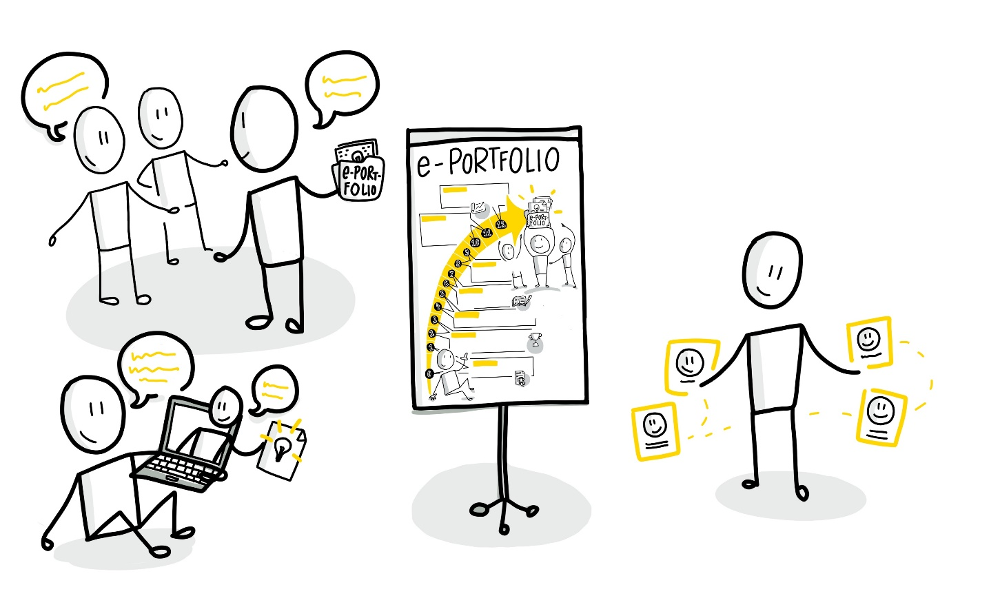

Learning area 5 - Networking
Learning area 5 - Networking
Networking and promotion of the ePortfolio within the community as well as obtain initial topic feedback and ideas (Weeks 8-9 with reference to the WOL Circle method)
Structure:
Week 8
A) Developing content ideas for further topic contributions B) Taking and giving feedback C) Distribute the first topic article via social media
Week 9
D) Provide current status on the topic E) Feedback round on who knows good contacts for the respective topic F) Learning reflection on the current status

Week 8 - Distribution of the article
A) Developing content ideas for further topic contributions | (approx. 20 minutes)
After you have created your first topic contribution during the last two weeks and perhaps already have a rough idea of how you want to proceed with your topic, discuss it together today and try to refine the rough plan. Which further aspects of your topic do you want to deepen in the next weeks? Where do you want to leave room for new aspects of your topic that you encounter in the course of your investigation? What do you not want to work on more deeply for the moment? You can develop this further in the course of this week and then exchange ideas either at the meeting next week or in the ongoing process.
B) Taking and giving feedback | (approx. 20 minutes)
Now it is also a good time to practice getting feedback on your planning from the others in the circle, to think about how and where it fits for you and also how you can give helpful feedback to the others. To support this you can work with different methods that bring a good structure into the feedback and help you to cover several dimensions.
A good method for this is, for example, Twitter feedback: Present your plan in the style of a Twitter message (or do it directly via Twitter) and, if necessary, ask questions that you have to the other circle participants. So max. 280 characters, hashtags, emojis etc. and the others answer, retweet with comments, ask questions on your part and use hashtags for the keywords again. Make several rounds about it and then a small summary or sort the re-tweets and hashtags afterwards into clusters, which very nicely show the main points, frequently mentioned aspects or additions.
C) Distribute the first topic article via social media| (approx. 20 minutes)
We all live and work in communities and networks. With the Internet and social media they have become larger, more geographically dispersed and more international. The opportunities for establishing relationships, accessing and sharing knowledge have also become much richer and more diverse. ePortfolios thrive on this networking and exchange with others - for example via social networks such as LinkedIn, Xing or Twitter. Thats why an important part of an ePortfolio is to build up its community or contribute to relevant communities and then learn from the comments and feedback from the network and further develop your own ideas. A first step into a topic community is to exchange your topic contributions with the other circle members in the respective social networks. A good example of networking and appreciative exchange is the Working out Loud method, which can also be applied in learning circles.
So your ePortfolio lives and breathes especially through your networking and building or entering a community. Up to now you have mainly exchanged ideas with each other in the circle and if you have not yet made your first contributions or artifacts available to a larger circle, now it is a good time to do so. Discuss with each other how you want to proceed and why you want to use which channel to further promote your portfolio. Afterwards, please feel free to share your first feature article about social media and other helpful channels.
Basic kata in this week (about 1 hour):
Publish your first ideas or a first rough topic plan as a second contribution to the ePortfolio and search for suitable experts or other contact points (e.g. institutions or organizations) for your topic on the web who could potentially network and exchange information with you in the future.
Advanced kata in this week (about 1 hour):
Leave a helpful comment in the ePortfolio of the others on their first topic contribution and if applicable give additional tips on your own experiences or links on the web.
Week 9 - Community building
D) Provide current status on the topic | (approx. 20 minutes)
After you have developed new topic ideas last week and evaluated them with the others a first rough topic plan should now have been created via the basic kata which covers different parts and facets of your theme interest. Present this status in the circle and think about how you can approach the two most important or the most pleasant next parts of the plan.
E) Feedback round on who knows good contacts for the respective topic | (approx. 25 minutes)
Introduce your web experts and contact points to each other and find out whether one or the other person in the circle already has a point of reference or could even connect you to contacts that would be helpful. Check together who it would be most worthwhile to get in contact with and create a first common contact list which you can tackle in the course of the week. The main goal is to consciously network and make your ePortfolio known under the motto Make it easy. Dare to try this out with the circle members with whom you will strengthen each others backs!
F) Learning reflection on the current status | (approx. 15 minutes)
At this point reflect together on what you have learned in the circle, what was especially important and helpful for you, what you have already been able to implement quite well, where things are not going so well and where you can still use support (from the circle) or where you want to deepen certain contents.
Starting point for this can be for example a short summary of the most important learnings of each circle member which you write on (analog or digital) cards and then compare: What is the same? Where are you different? At what point small accumulations have occurred? What do the others have on the cards that you didnt think of yourself? Therefor you can use e.g. the Whiteboard application in Teams or standalone.
Basic kata in this week (about 1 hour):
Write down your identified contacts in a targeted and friendly manner via the channels that seem suitable to you and refer briefly to your first topic article and the rough topic plan.
If necessary take up suitable links and sources that connect you with each other professionally and that the expert has already prepared comprehensively or competently from your perspective.
Advanced video kata in this week (about 1 to 2 hours):
Create a small video podcast episode in which you welcome your potential ePortfolio visitors and describe your topic ideas audiovisually.